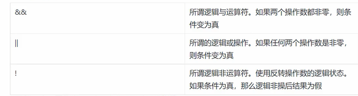
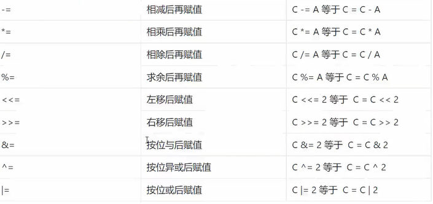
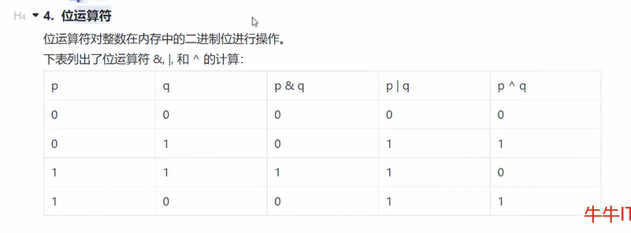

golang学习记录（4）
golang
golang基础学习
基础数据类型
go的基础数据类型有bool、string、int、float、byte、rune、uint、int8、int16、int32、int64、uint8、uint16、uint32、uint64、float32、float64等
具体可以分成以下几种：

1、数值、浮点数和字符类型
1.1、布尔类型
true 和 false
1.2、数值类型
1.2.1、整数
多种数值考虑到了空间要求高的情况
int8
int16
int32
int64
uint8
uint16
uint32
uint64
int
uint
int和uint的大小取决于操作系统架构，操作系统时32位就是32位，操作系统是64位就是64位
其他类型具体介绍如下： 
1.2.2、浮点数
float32
float64
分别表示32位浮点数和64位浮点数
1.2.3、复数
在go中没有复数类型，但是可以使用complex64和complex128类型来表示复数。
go中也有专门的包处理复数
import "math/cmplx"1.2.4、byte字节
go中没有char类型，只有byte类型，byte是uint8的别名，byte类型用于表示一个字节（8bit），通常用于处理二进制数据和文本数据。
var b byte = 'A'1.2.5、rune类型
rune是int32的别名，rune类型用于表示一个Unicode字符，通常用于处理Unicode文本数据。
var r rune = '中'1.3、字符和字符串
单个字符一般用byte进行存储
字符串就是string
var name string
name = "aorange"2、基本类型的转换
在go中定义了byte，他是uint8的别名，通过这种别名的方式确定byte用于字符，而不是将uint8既用于字符又用于整数。
var a int8 = 12
var b = uint8(a)
var f float32 = 12.3
var g = int(f)
// 字符转换为数字，这种情况可能会出错，有err返回
var isrt = "12"
var i, err = strconv.Atoi(isrt)
if err!= nil {
fmt.Println("转换失败")
}
//数字转字符串类型，理论上不会出错，没有err返回
var i = 12
var s = strconv.Itoa(i)3、format进行格式转换
将字符串转成folat32，或者bool类型 将其他类型转成字符串类型
var s = "12.3"
var f, err = strconv.ParseFloat(s, 32) // 32表示32位浮点数
//ParseInt进行进制转换
parseInt , err := strconv.ParseInt(s: "12", 8, 64)//8表示8进制，64表示64位
//此时输出结果为10进制的10
//有关bool类型的转换
parseBool, err := strconv.ParseBool(s: "true")
//转换失败parseBool结果为零值，即false，err不为空
//true，t，T，y，Y，1，
//false，f，F，n，N，0
//其他结果转换可能失败
//基本类型转字符串
strconv.FmoatBool(b: true)
fmt.Println(b)
//其他的转换可以找源码看看，都差不多，都是用的strconv.FormatXXX转换失败测试如下： 
4、运算符和表达式
这玩意需要到了就直接查，常用的跟C++差不多
4.1、算术运算符

4.2、关系运算符

4.3、逻辑运算符

4.4、赋值运算符

4.5、位运算符
对性能要求高的情况下考虑与运算，与运算比加减乘除运算快很多



4.6、go运算符的优先级
具体优先级如下： 

基础还是要多使用，熟悉就好了，各种语言关于数据的类型和转换都有相似之处